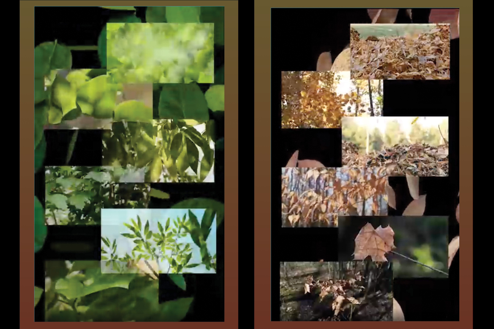
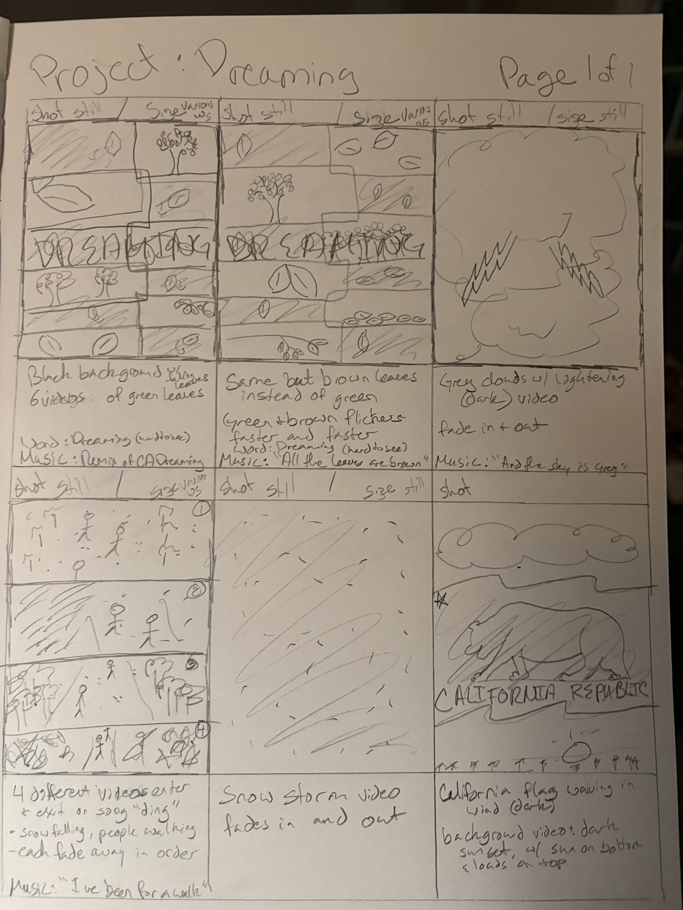
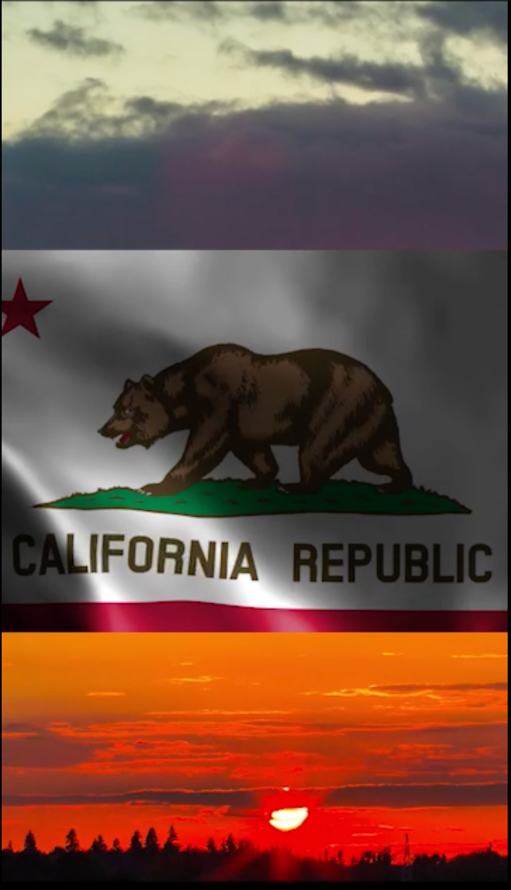

SOFTWARE
Adobe Photoshop
Adobe Premiere Pro
ROLE
Motion Designer
Video Editor
DELIVERABLES
Concept Development
Storyboarding
Motion Design
Video Editing
ASSETS
Music: "California Dreamin'"
Performed by Vince Cox feat. Laura Currie
Originally performed by The Mamas & the Papas
Audio source: YouTube (educational use)
Envato Elements (licensed subscription assets)
PROJECT OVERVIEW
California Dreamin' is a conceptual motion graphic project that reimagines the classic song through a calm, atmospheric visual experience. The short animation explores the feeling of nostalgia, nature, and the California landscape through layered imagery, movement, and cinematic pacing.
The goal was to translate the emotion of the song into a visual journey by combining photography, compositing, and video editing techniques. The project focuses on creating mood and storytelling through subtle motion rather than traditional narrative animation.
DESIGN APPROACH
The visual direction combines organic textures, natural elements, and warm cinematic tones to create a dreamlike interpretation of California. Leaves, landscapes, and atmospheric transitions were used to build a sense of movement and reflection while supporting the emotional tone of the music.


